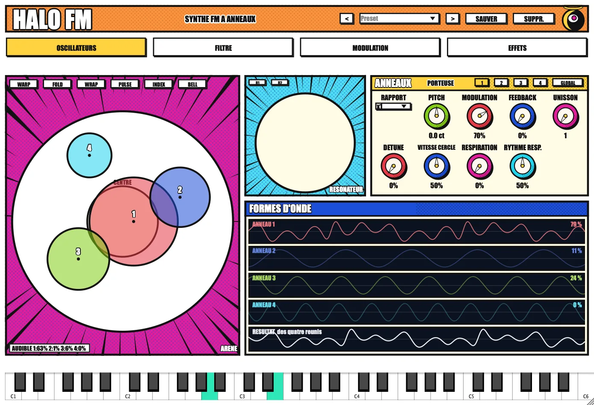

ComicsSynthés
Halo FM
Synthé FM à anneaux · la FM qu'on dessine

Ce qu’il fait
La modulation de fréquence se dessine. Quatre anneaux-opérateurs et un centre qui écoute : le croisement de deux anneaux règle l'indice FM. Deux cercles supplémentaires pour la brillance (Index) et pour les sons de cloche (Bell). Du clavier froid à la basse qui cogne.
En bref
- Quatre opérateurs sinus, rapports de ×0,25 à ×16
- Le croisement des anneaux règle l'indice de la FM
- Cercles Index (brillance) et Bell (cloche, verre)
- Enveloppe d'indice : pianos électriques, cloches, nappes
- Gamme
- Comics · Synthés
- Formats
- Audio Unit, VST3
- Système
- macOS, Apple Silicon et Intel